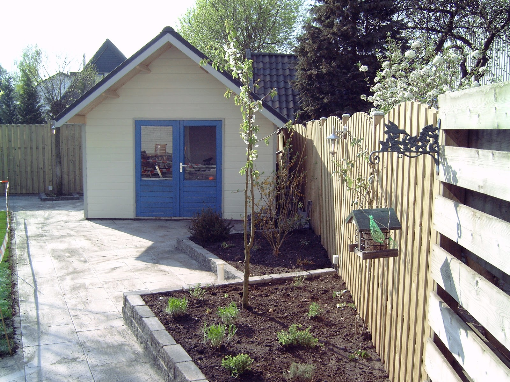

Tuinaanleg
Bestrating, borders, gazon, schuttingen en beplanting: wij leggen uw tuin van begin tot eind aan. Met jarenlange ervaring, voor particulieren en bedrijven. Voor een bedrijfstuin geldt: dat is uw visitekaartje, en zo leggen we hem ook aan.